About
×

News
- Three papers submitted to ICASSP 2025
- One paper accepted by IEEE Transactions on Mobile Computing
- One paper accepted by IEEE Internet of Things Journal
- Three papers accepted by ICONIP 2024
- One paper accepted by IEEE Transactions on Vehicular Technology
- Three papers accepted by OCEANS 2024
- One paper accepted by IEEE Internet of Things Journal
- Three papers accepted by ICANN 2024
- One paper accepted by IEEE Journal of Selected Topics in Signal Processing
- One paper accepted by IEEE Internet of Things Journal
- Two papers accepted by IEEE WCCI 2024
- One paper accepted by IEEE WCNC 2024
- I started my graduate life at Tsinghua University
- Two papers accepted by Sensors
- Awarded Outstanding Undergraduate Thesis at Zhejiang University
- Listed as one of the Outstanding Graduates at Zhejiang University
- Awarded National Encouragement Scholarship at Zhejiang University (Top 3%)
- Listed as one of the Top 10 Outstanding Students in LanTian Community of Zhejiang University (10/1.8k+)
- Awarded Nandu First-Class Scholarship at Zhejiang University (Top 0.2%)
- Awarded Zhejiang Provincial Government Scholarship at Zhejiang University (Top 3%)
Selected Publications and Preprints

Enhancing Information Freshness: An AoI Optimized Markov Decision Process Dedicated in The Underwater Task
In Submission
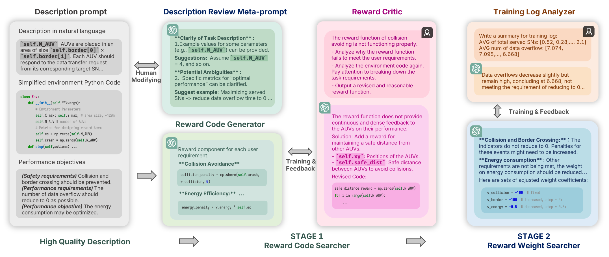
Large Language Models as Efficient Reward Function Searchers for Custom-Environment Multi-Objective Reinforcement Learning
In Submission
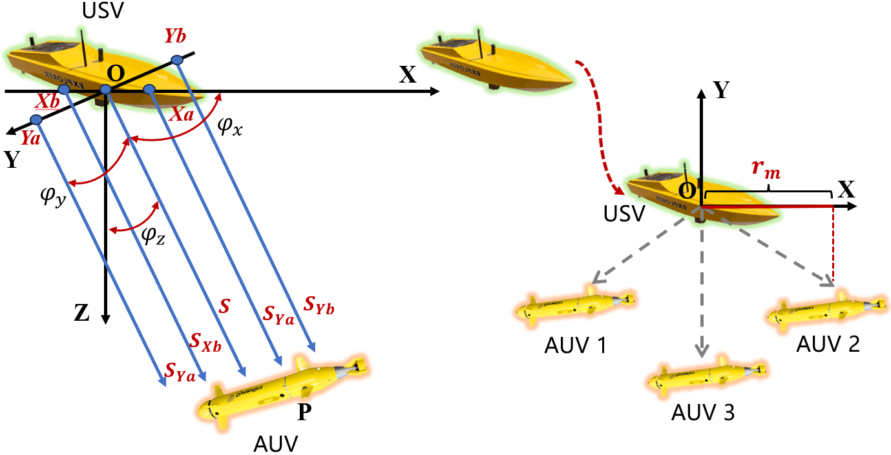
USV-AUV Collaboration Framework for Underwater Tasks under Extreme Sea Conditions
In Submission
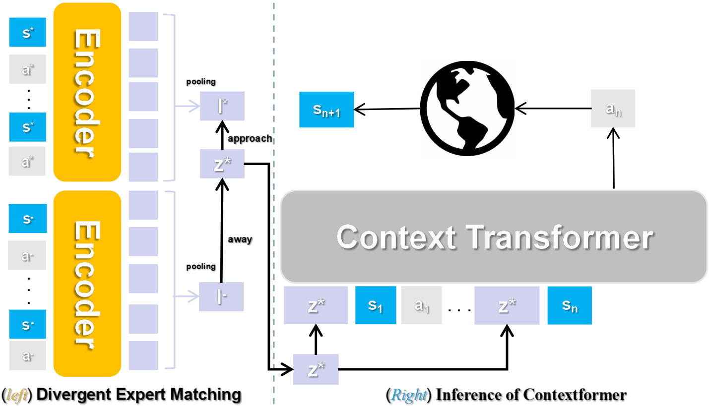
ContextFormer: Stitching via Latent Conditioned Sequence Modeling
In Submission
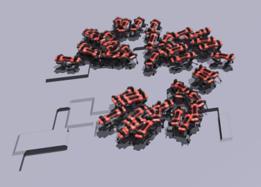
A Dynamical Clipping Approach with Task Feedback for Proximal Policy Optimization
In Submission
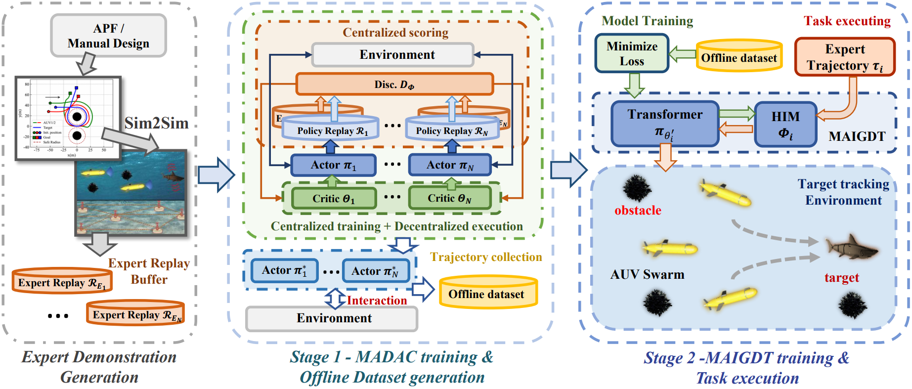
Is FISHER All You Need in The Multi-AUV Underwater Target Tracking Task?
IEEE Transactions on Mobile Computing 2024
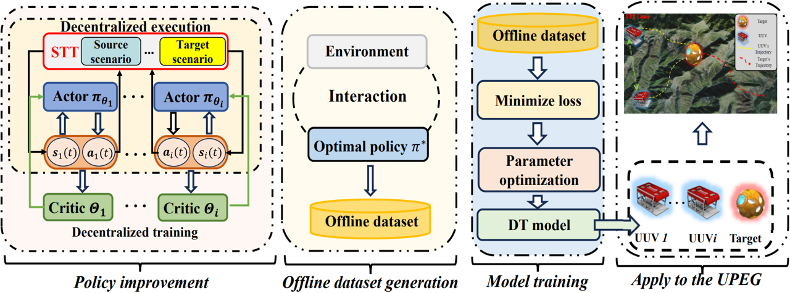
HPTVSim: A Simulator for Unmanned Underwater Vehicles Dedicated in the Underwater Pursuit-Evasion Game
IEEE Internet of Things Journal 2024

Multi-AUV Pursuit-Evasion Game in the Internet of Underwater Things: An Efficient Training Framework via Offline Reinforcement Learning
IEEE Internet of Things Journal 2024
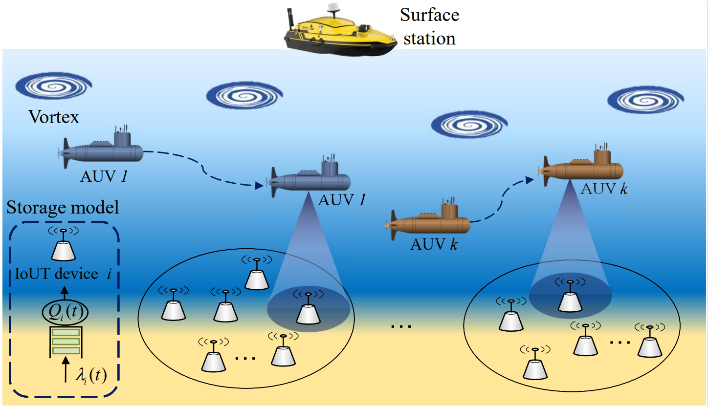
Environment and Energy-Aware AUV-Assisted Data Collection for the Internet of Underwater Things
IEEE Internet of Things Journal 2024
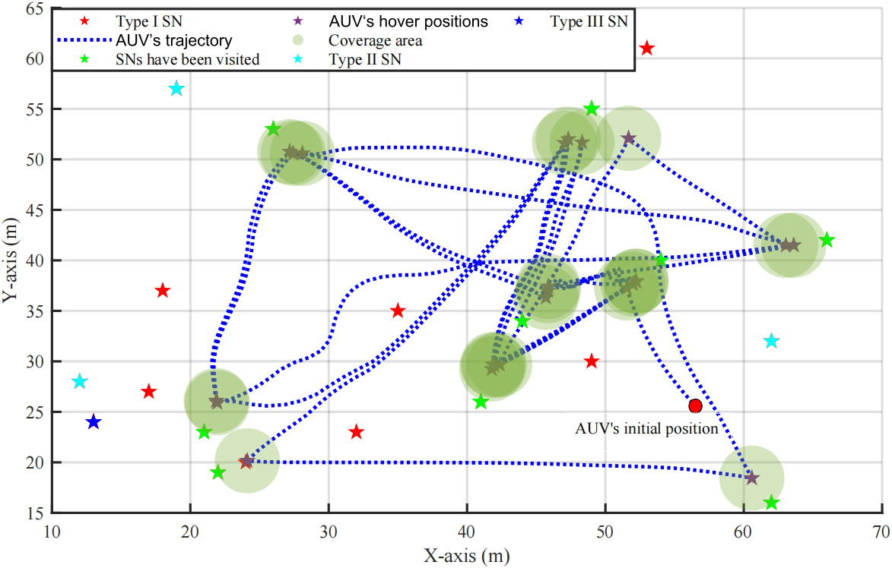
VoI and Energy-Aware AUV-Assisted Data Collection for Internet of Underwater Things
IEEE WCNC 2024
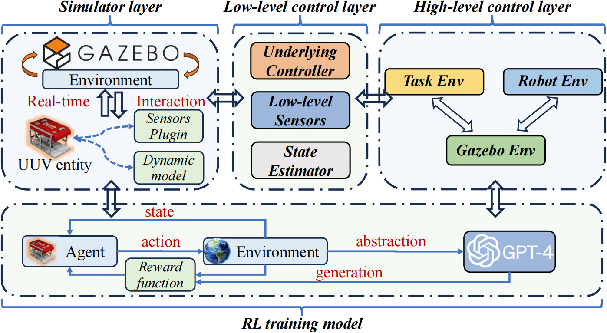
IMTVSim: An Integrated Modular Training and Verification Simulator for Unmanned Underwater Vehicles
OCEANS 2024
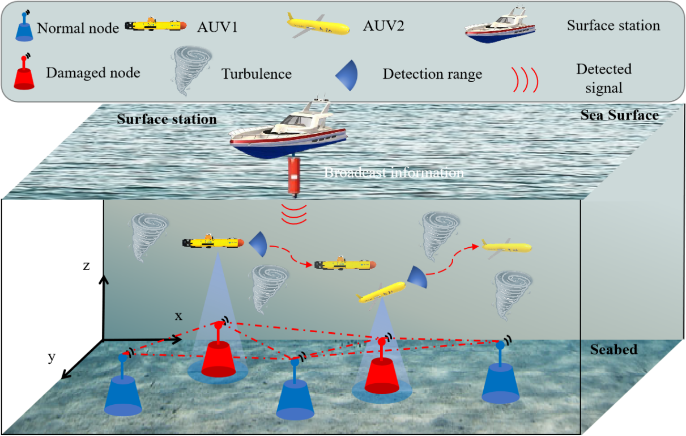
Advanced Framework for Underwater Node Repair via Multi-AUV Based on Multi-Agent Offline Reinforcement Learning
OCEANS 2024
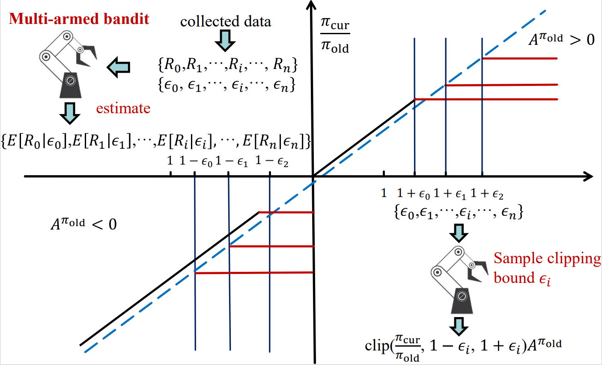
AUV Efficient Navigation Relying on Adaptive Proximal Policy Optimization
ICONIP 2024
Fisher-Information-Matrix-Based USBL Cooperative Location in USV-AUV Networks
Sensors 2023
MOGA Lab
Make Ocean Great Again (MOGA) Lab
Founded and spearheaded by Jingzehua (MiMi) Xu, MOGA is a research team consisting of just five students.
Despite our diverse backgrounds, we are united by a shared passion for collaboratively identifying and addressing challenges to advance human exploration of the ocean. Remarkably, the research topics at MOGA are entirely independent of any professor or specific project, allowing us to pursue our interests freely—you have the liberty to explore whatever captivates you here. Additionally, there are no hierarchical distinctions within MOGA; every member is treated with equal respect and importance.
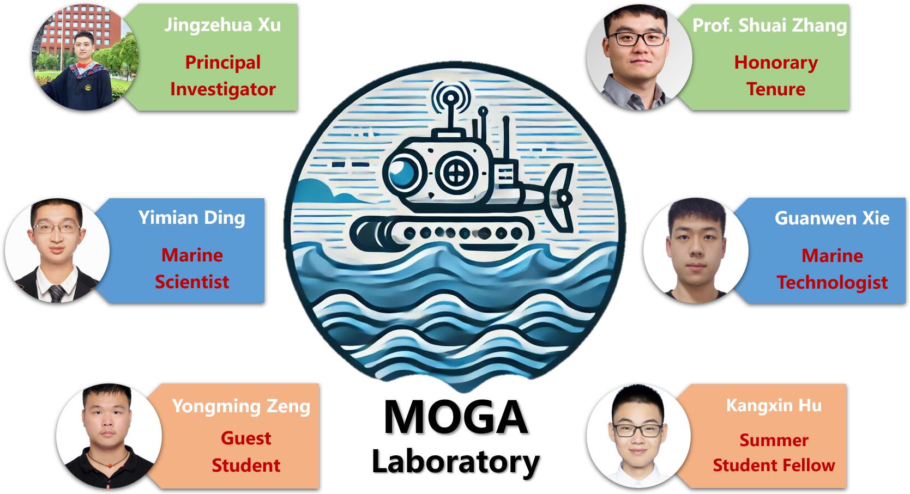
Selected Honors
- Awarded to top undergraduate Thesis at Zhejiang University
- Awarded to top undergraduate students at Zhejiang University
- Awarded to Top 3% students at Zhejiang University
- Awarded to Top 0.6% students in LanTian Community of Zhejiang University
- Awarded to Top 0.2% students at Zhejiang University
- Awarded to Top 3% students at Zhejiang University
Outstanding Undergraduate Thesis, 2023
Outstanding Graduate at Zhejiang University, 2023
National Encouragement Scholarship, 2022
Top 10 Outstanding Students, 2021
Nandu First-Class Scholarship, 2021
Zhejiang Provincial Government Scholarship, 2021
Academic Service
- IEEE Wireless Communications and Networking Conference (WCNC), Dubai, United Arab Emirates, 2024
- OCEANS, Halifax, Canada, 2024
Conference Session Chair 2024
- The 41st IEEE International Conference on Robotics and Automation (ICRA), Yokohama, Japan, 2024
- The 34th International Joint Conference on Neural Networks (IJCNN), Yokohama, Japan, 2024
- The 33rd International Conference on Artificial Neural Networks (ICANN), Lugano, Switzerland, 2024
Conference Reviewer 2024
Miscellaneous
I'm also an avid hamster enthusiast and have been enjoying raising hamsters🐹 for 6 years.
By observing hamsters grow from juveniles to maturity and noting their competition and cooperation with one another, I have gained significant research inspiration for using reinforcement learning to train underwater robots to collaboratively complete tasks in the environment with uncertainty.
Besides, I really fall in love with sea practice. After collaborating with the team aboard the ship, relishing the sea breeze and the serene passage of time, I frequently found myself dreaming about the mesmerizing world beneath the waves and became resolutely committed to pursuing further ocean exploration.
By observing hamsters grow from juveniles to maturity and noting their competition and cooperation with one another, I have gained significant research inspiration for using reinforcement learning to train underwater robots to collaboratively complete tasks in the environment with uncertainty.
Besides, I really fall in love with sea practice. After collaborating with the team aboard the ship, relishing the sea breeze and the serene passage of time, I frequently found myself dreaming about the mesmerizing world beneath the waves and became resolutely committed to pursuing further ocean exploration.
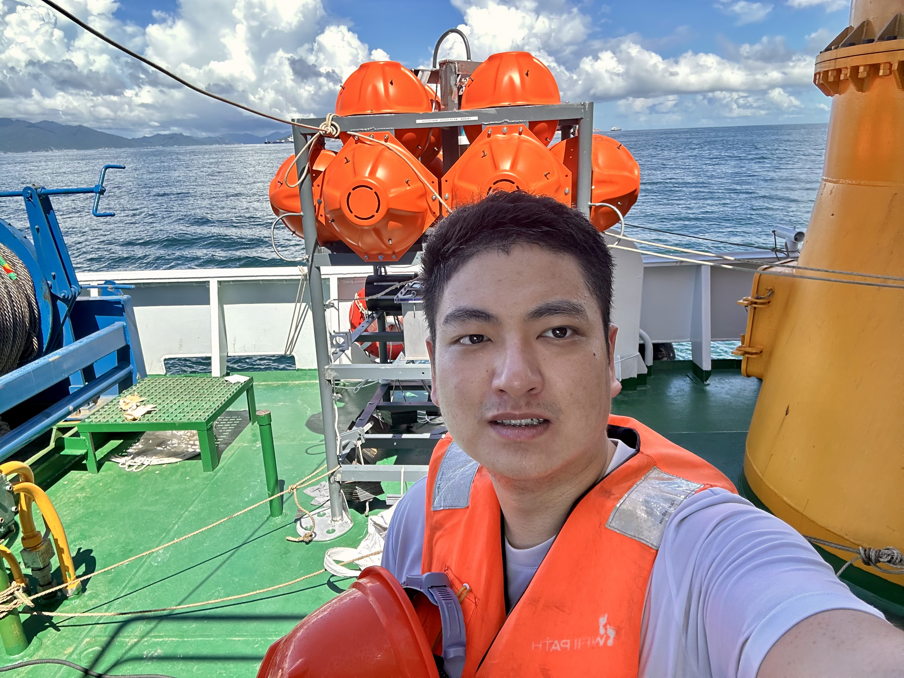
|